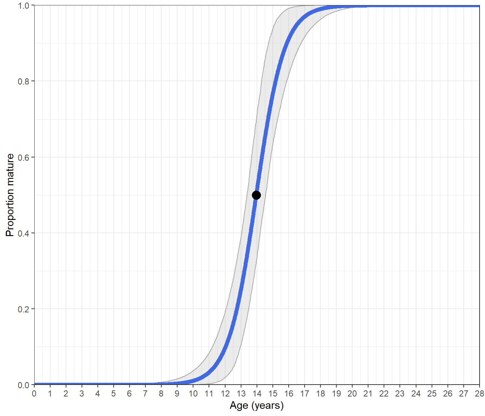

Maturity estimation for aquatic species through the AquaticLifeHistory package
Jonathan Smart
2019-11-25
Source:vignettes/Maturity_analyses.Rmd
Maturity_analyses.RmdIntroduction
Maturity estimation is performed by fitting a maturity ogive to binary maturity statuses for either length or age data. Maturity ogives are fitted using a glm with a logit link function and usually with a binomial error structure (but we’ll touch on this soon). A glm of this sort is fitted in R using:
glm(formula = Maturity~Age,data = my.data, family = "binomial")The default link function for a binomial error structure is the logit link function. Therefore this does not need to be specified.
All maturity analyses using a logistic ogive are fitted in this manner and this is the basic operation occurring in all the maturity functions in the AquaticLifeHistory package. However, getting all of the information needed to produce analyses for publication can involve several steps with a few different decisions needed. Therefore the Estimate_Age_Maturity and Estimate_Len_Maturity functions handle much of these additional steps. However, it is important for the user to understand that these are basically wrapper functions around a glm call. As such the analyses inside thes functions are simple to implement outside of this package.
The Estimate_Age_Maturity and Estimate_Len_Maturity functions perform the following:
- Estimate the length or age at 50% and 95% maturity with standard errors. Standard errors are important outputs and should always be reported for parameters.
- Bootstrap the data with a specified number of iterations to produce 95% confidence intervals about the curve
- Produce a plot of either:
- A standard logistic ogive with a binomial error structure. This is fit to binary data.
- A binned logistic ogive with a quasibinomial error structure. This is fit to proportion mature data for specified length or age bins. These bins are created inside the function using a specified bin width.
- Return the parameter estimates, plots of the maturity ogive or the predicted ogive fits with bootstrapped estimates for the user to produce their own plots (recommended if the outputs are meant for publication).
Input data
The input data for both Estimate_Age_Maturity and Estimate_Len_Maturity functions require an age or length variable as well as a binary maturity variable. These functions accept various column headings for flexibility. For example Estimate_Len_Maturity will accept a column named “Length”, “Len”, “STL”, “TL”, “LT” or “size”" (plus others) as the input column for the length variable. However, the maturity and age columns must have names that begin with “mat” and “age”, respectively. The variable names needed by the functions are not case sensitive.
A data set for female silky sharks (Carcharhinus falciformis) from Papua New Guinea is included as example data. This shows the typical format accepted by both functions.
library(AquaticLifeHistory)
data("maturity_data")
head(maturity_data)
#> Tag Age Length Maturity
#> 1 10001 12 178 0
#> 2 10004 10 165 0
#> 3 10011 9 140 0
#> 4 10013 8 144 0
#> 5 10016 0 91 0
#> 6 10019 10 158 0
# Maturity variable is binary (immature = 0, mature = 1)
range(maturity_data$Maturity)
#> [1] 0 1
Estimate_Age_Maturity
Both maturity functions produce very similar outputs based on either age or length data. They are built to handle the same data set so there is no need to subset your data for just length or age. Each function will identify the variables it needs and will ignore the others.
The Estimate_Age_Maturity function unsurprisingly estimates age-at-maturity. In doing so it gives you a choice of model:
- Binomial model fitted to binary data
- Quasibinomial model fitted to binned proportion mature data
The input data is the same for both as the age bins are handled automatically.
Binomial model
The default call to Estimate_Age_Maturity will return your parameters with their standard errors (which you should ALWAYS report). The SE’s are the asymptotic errors from the logistic ogive
Estimate_Age_Maturity(maturity_data)
#> Estimate SE
#> A50 13.95113 0.3033328
#> A95 16.53427 0.5321205However, if you would like to get a little more out of this function, you can have it return a plot with bootstrapped confidence intervals around the curve
# selecting return = "plot" returns a ggplot object rather than the parameters.
Estimate_Age_Maturity(maturity_data, return = "plot", n.bootstraps = 1000)
#> Bootstrapping logistic model with a binomial error structure
This is a standard logistic ogive with a binomial error structure that has been fitted to binary data. The blue line is the predicted maturity ogive over the age range of the species, the black point marks the length-at-50%-mature and the grey shading shows the bootstrapped 95% confidence intervals.
Additionally, you can display the binary data by setting display.points = TRUE
# selecting return = "plot" returns a ggplot object rather than the parameters.
Estimate_Age_Maturity(maturity_data, return = "plot", n.bootstraps = 1000, display.points = TRUE)
#> Bootstrapping logistic model with a binomial error structure
Quasibinomial (binned) model
An alternative approach is to bin the data by age class and determine the proportion mature in each age class. This is performed by selecting error.structure = "quasibinomial". Within the function, the binary data is binned by age and the model is fitted with the quasibinomial structure with each age bin weighted by its sample size. Doing so often returns similar parameter estimates:
Estimate_Age_Maturity(maturity_data)
#> Estimate SE
#> A50 13.95113 0.3033328
#> A95 16.53427 0.5321205
Estimate_Age_Maturity(maturity_data, error.structure = "quasibinomial")
#> Estimate SE
#> A50 13.95113 0.2207194
#> A95 16.53427 0.3872002However, a different plot is returned with stacked bars showing the proportion mature. The sample size of each bin is displayed above it.
# selecting return = "plot" returns a ggplot object rather than the parameters.
Estimate_Age_Maturity(maturity_data, return = "plot", n.bootstraps = 1000, error.structure = "quasibinomial")
#> Bootstrapping logistic model with a quasibinomial error structure
With regards to age - both logistic model options return almost identical ogives. Therefore, the decision of which to use is up to the user.
Estimate_Len_Maturity
Estimating length-at-maturity is handled the same as age was previously but with its own function. All of the arguments are the same with one exception (which we’ll get to shortly).
You can get the parameters:
Estimate_Len_Maturity(maturity_data)
#> Estimate SE
#> L50 204.1923 1.966440
#> L95 218.9104 3.299168A plot of the binomial model with the the option of displaying the points
# selecting return = "plot" returns a ggplot object rather than the parameters.
Estimate_Len_Maturity(maturity_data, return = "plot", n.bootstraps = 1000, display.points = TRUE)
#> Bootstrapping logistic model with a binomial error structure
As the length unit can differ between data sets, the function determines whether cm or mm are being used and will adjust the axis as needed.
new_data <- maturity_data
new_data$Length <- new_data$Length*10
Estimate_Len_Maturity(new_data, return = "plot", n.bootstraps = 1000, display.points = TRUE)
#> Bootstrapping logistic model with a binomial error structure
However, an additional argument is needed to use a quasibinomial model. Previously, we binned age by year class as there is no other sensible way to go about this. However, for length the bin width needs to be specified and this is very important. This is done using the bin.width argument.
# selecting return = "plot" returns a ggplot object rather than the parameters.
Estimate_Len_Maturity(maturity_data,
return = "plot",
n.bootstraps = 1000,
error.structure = "quasibinomial",
bin.width = 25)
#> Bootstrapping logistic model with a quasibinomial error structure
Note that because now we have to chose the bin width, this can influence results:
# Binomial model
Estimate_Len_Maturity(maturity_data)
#> Estimate SE
#> L50 204.1923 1.966440
#> L95 218.9104 3.299168
# Length in 10 cm bins
Estimate_Len_Maturity(maturity_data,
error.structure = "quasibinomial",
bin.width = 10)
#> Estimate SE
#> L50 197.9664 0.7394672
#> L95 213.3713 1.2422643
# Length in 25 cm bins
Estimate_Len_Maturity(maturity_data,
error.structure = "quasibinomial",
bin.width = 25)
#> Estimate SE
#> L50 190.4114 0.3015731
#> L95 207.3138 0.4341498
# Length in 30 cm bins
Estimate_Len_Maturity(maturity_data,
error.structure = "quasibinomial",
bin.width = 30)
#> Estimate SE
#> L50 185.3833 1.185920
#> L95 208.7201 2.103398In each instance the L50 changed which means that judicious choice of length bin is needed. Therefore, I usually advocate that for length-at-maturity you should used a binomial model with binary data as this avoids introducing potential bias. It should be noted that this is only an issue for length as binning data for age does not require decisions on bin width and therefore avoids biasing the results.
Therefore, if you plan on binning length data make sure you think things through carefully.
Retrieving logistic model estimates
When producing outputs for publication, you should always aspire to create their own outputs. The figures produced by this function are publication quality but are intended to provide guidance and assistance rather than the final figures. To enable one to produce their own plots, the results of the maturity ogive and their 95% confidence intervals can be extracted instead of the plot. This works the same for both functions with either logistic model.
# selecting return = "plot" returns a ggplot object rather than the parameters.
Mat_at_age_estimates <- Estimate_Age_Maturity(maturity_data,
return = "estimates",
n.bootstraps = 1000,
error.structure = "quasibinomial")
#> Bootstrapping logistic model with a quasibinomial error structure
Mat_at_len_estimates <- Estimate_Len_Maturity(maturity_data,
return = "estimates",
n.bootstraps = 1000,
error.structure = "binomial")
#> Bootstrapping logistic model with a binomial error structure
head(Mat_at_age_estimates)
#> Age Estimate high low
#> 1 0.00 1.240623e-07 4.433188e-13 6.830236e-06
#> 2 0.01 1.254845e-07 4.523968e-13 6.889052e-06
#> 3 0.02 1.269231e-07 4.616607e-13 6.948375e-06
#> 4 0.03 1.283781e-07 4.711142e-13 7.008208e-06
#> 5 0.04 1.298498e-07 4.807614e-13 7.068556e-06
#> 6 0.05 1.313384e-07 4.906062e-13 7.129425e-06
head(Mat_at_len_estimates)
#> Length Estimate high low
#> 1 0.00 2.220446e-16 2.220446e-16 2.220446e-16
#> 2 0.01 2.220446e-16 2.220446e-16 2.220446e-16
#> 3 0.02 2.220446e-16 2.220446e-16 2.220446e-16
#> 4 0.03 2.220446e-16 2.220446e-16 2.220446e-16
#> 5 0.04 2.220446e-16 2.220446e-16 2.220446e-16
#> 6 0.05 2.220446e-16 2.220446e-16 2.220446e-16